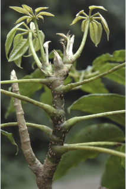
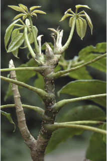
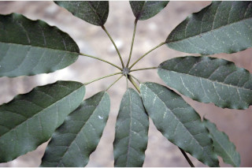
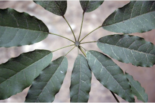

| Leaves : | Leaves compound , digitate , alternate , spiral , crowded at twig ends, pulvinate ; rachis 8-25 cm long, terete , striate , sheath at base, stipule adnate to the petiole ; petiolule 1.3-6 cm long, leaflets 5-9, progressively increase in size, lamina 5.5-17 x 3-6 cm narrow elliptic to elliptic-oblong , apex acuminate , base acute to rounded , margin undulate , thinly coriaceous , glabrous , slightly glaucous beneath; midrib raised above; secondary_nerves 7-9 pairs; tertiary_nerves reticulo-percurrent . |

 



 
